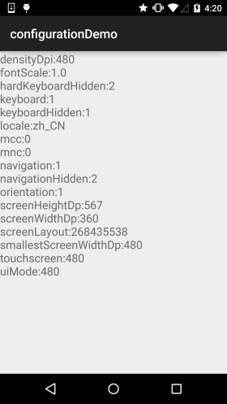
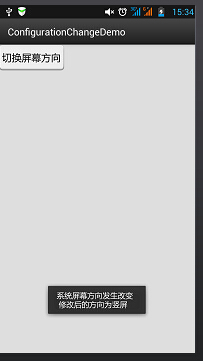
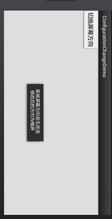

このセクションの導入：
このセクションで紹介するConfigurationクラスは、スマートフォン端末の構成情報を記述するために使われます。例えば、画面の向き、タッチスクリーンのタッチ方式などです。ROMをカスタマイズしたことがある方ならご存知かもしれませんが、このクラスは次の場所にあります： frameworks/base/core/java/android/content/res/Configuration.java このクラスを見つけて、関連する設定を変更できます。例えば、デフォルトのフォントサイズを調整するなどです。興味があればご自身で調べてみてください！ このセクションでは、Android開発におけるConfigurationクラスの使い方を説明します。 APIドキュメント：Configuration
1.Configurationが提供するメソッドリスト
- densityDpi：画面密度
- fontScale：現在のユーザー設定によるフォントのスケール係数
- hardKeyboardHidden：ハードウェアキーボードが表示されているかどうかを判定します。選択可能な値は2つあります：HARDKEYBOARDHIDDEN_NO、HARDKEYBOARDHIDDEN_YES。それぞれ16進数の0と1です。
- keyboard：現在関連付けられているキーボードタイプを取得します。この属性の戻り値：KEYBOARD_12KEY（12キーのみの小型キーボード）、KEYBOARD_NOKEYS、KEYBOARD_QWERTY（通常のキーボード）
- keyboardHidden：この属性は、現在のキーボードが使用可能かどうかを示すboolean値を返します。この属性は、システムのハードウェアキーボードだけでなく、システムのソフトキーボード（画面上にある）も判定します。
- locale：ユーザーの現在のロケール（言語環境）を取得します
- mcc：モバイル信号の国コードを取得します
- mnc：モバイル信号のネットワークコードを取得します
ps：国コードとネットワークコードを合わせて、現在の携帯電話ネットワーク事業者を決定します- navigation：システム上の方向ナビゲーションデバイスのタイプを判定します。この属性の戻り値：NAVIGATION_NONAV（ナビゲーションなし）、NAVIGATION_DPAD（DPADナビゲーション）、NAVIGATION_TRACKBALL（トラックボールナビゲーション）、NAVIGATION_WHEEL（ホイールナビゲーション）
- orientation：システム画面の向きを取得します。この属性の戻り値：ORIENTATION_LANDSCAPE（横向き画面）、ORIENTATION_PORTRAIT（縦向き画面）
- screenHeightDp，screenWidthDp：画面の利用可能な高さと幅。dpで表されます
- touchscreen：システムのタッチスクリーンのタッチ方式を取得します。この属性の戻り値：TOUCHSCREEN_NOTOUCH（タッチスクリーンなし）、TOUCHSCREEN_STYLUS（タッチペン式タッチスクリーン）、TOUCHSCREEN_FINGER（指を受け付けるタッチスクリーン）
2.簡単な例を書いてテストしてみましょう：
実行スクリーンショット：

コード実装：
public class MainActivity extends AppCompatActivity {
@Override
protected void onCreate(Bundle savedInstanceState) {
super.onCreate(savedInstanceState);
setContentView(R.layout.activity_main);
TextView txtResult = (TextView) findViewById(R.id.txtResult);
StringBuffer status = new StringBuffer();
//①获取系统的Configuration对象
Configuration cfg = getResources().getConfiguration();
//②想查什么查什么
status.append("densityDpi:" + cfg.densityDpi + "\n");
status.append("fontScale:" + cfg.fontScale + "\n");
status.append("hardKeyboardHidden:" + cfg.hardKeyboardHidden + "\n");
status.append("keyboard:" + cfg.keyboard + "\n");
status.append("keyboardHidden:" + cfg.keyboardHidden + "\n");
status.append("locale:" + cfg.locale + "\n");
status.append("mcc:" + cfg.mcc + "\n");
status.append("mnc:" + cfg.mnc + "\n");
status.append("navigation:" + cfg.navigation + "\n");
status.append("navigationHidden:" + cfg.navigationHidden + "\n");
status.append("orientation:" + cfg.orientation + "\n");
status.append("screenHeightDp:" + cfg.screenHeightDp + "\n");
status.append("screenWidthDp:" + cfg.screenWidthDp + "\n");
status.append("screenLayout:" + cfg.screenLayout + "\n");
status.append("smallestScreenWidthDp:" + cfg.densityDpi + "\n");
status.append("touchscreen:" + cfg.densityDpi + "\n");
status.append("uiMode:" + cfg.densityDpi + "\n");
txtResult.setText(status.toString());
}
}
3.onConfigurationChangedをオーバーライドしてシステム設定の変更に応答する
このメソッドはシステム設定の変更を監視するために使われ、コールバックベースのイベント処理メソッドです。システムの設定が変更されると自動的にトリガーされます。ただし、1点注意が必要です。以下の方法で監視する場合、targetSdkVersion属性は最大で12にしか設定できません。12より高いと、このメソッドは呼び出されません！ここでは、縦横画面切り替えの例を参考として示します。その他はご自身でGoogle検索してください。
コード例：シンプルなボタンで、クリックすると縦横画面を切り替え、その後Toastで通知します
実行効果図：


実装コード：
public class MainActivity extends Activity {
@Override
protected void onCreate(Bundle savedInstanceState) {
super.onCreate(savedInstanceState);
setContentView(R.layout.activity_main);
Button btn = (Button) findViewById(R.id.btncahange);
btn.setOnClickListener(new OnClickListener() {
@Override
public void onClick(View v) {
Configuration config = getResources().getConfiguration();
//如果是横屏的话切换成竖屏
if(config.orientation == Configuration.ORIENTATION_LANDSCAPE)
{
MainActivity.this.setRequestedOrientation(ActivityInfo.SCREEN_ORIENTATION_PORTRAIT);
}
//如果竖屏的话切换成横屏
if(config.orientation == Configuration.ORIENTATION_PORTRAIT)
{
MainActivity.this.setRequestedOrientation(ActivityInfo.SCREEN_ORIENTATION_LANDSCAPE);
}
}
});
}
@Override
public void onConfigurationChanged(Configuration newConfig) {
super.onConfigurationChanged(newConfig);
String screen = newConfig.orientation == Configuration.ORIENTATION_LANDSCAPE?"横屏":"竖屏";
Toast.makeText(MainActivity.this, "系统屏幕方向发生改变 \n 修改后的方向为" + screen, Toast.LENGTH_SHORT).show();
}
}
また、AndroidManifest.xmlに以下の内容を追加する必要があります：
権限：< uses-permission android:name="android.permission.CHANGE_CONFIGURATION" /><activity>タグに追加：android:configChanges="orientation"targetSdkVersionを12以上に変更します。12でも構いません。
このセクションのまとめ：
このセクションでは、ConfigurationクラスとonConfigurationChangedによるシステム設定の変更への応答について説明しました。概要を把握できれば十分です。後で使う機会があれば、さらに深く掘り下げていきましょう。